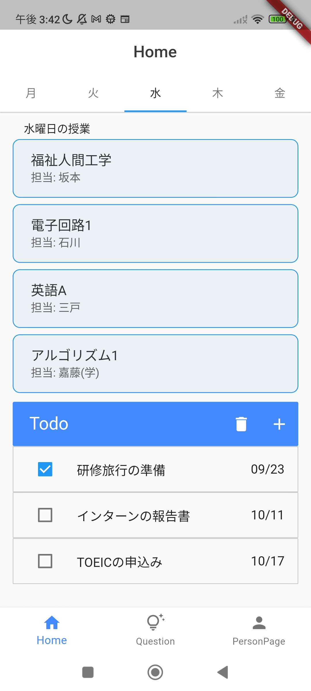
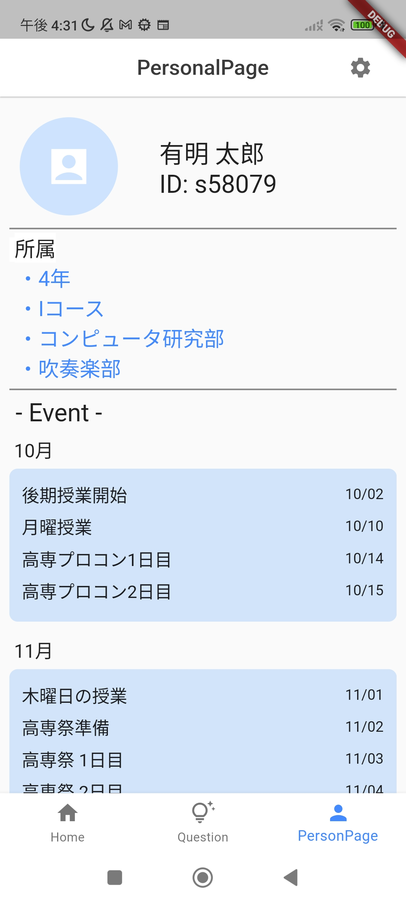

学習のなによりの特徴、それは分かった時に得られる自信と喜びです。反対に、わからないことを放置していると不安や後ろめたさが出てきます。Learn Mateはそんな｢わからない｣を抱える学生にとって最も心強い味方です。質問をクラスメイトに、そして先生に送りましょう。匿名になっているため心配はいりません。

他のツールに使い慣れていて、どうしても外部サービスを使いたい先生にも寄り添います。アプリ内に外部リンクを埋め込むことでLearn Mate内から外部サービスにアクセスできます。もういくつものサービスを行き来するために複数のアプリを開いたりブラウザで複数のタブを開いたりする必要はありません。

学習は、最適な計画を組んでこそより効果のあるものとなります。Learn Mateを使って課題、自主学習の計画を管理して残った時間をあなただけの素敵な時間にしましょう。

学生は普段部活、学年、クラスなどの様々な場において力を発揮しています。そんな学校生活をLearn Mateは全力で後押しします。LMパーソナルは他のクラスや部活との交流をシームレスにする手助けをしてくれます。